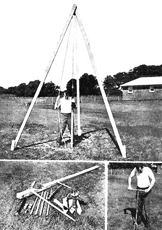

TO DRIVE A WELL you need quality equipment shown above. You'll speed up the job by first boring hole with a post-hole digger (above right). A sledgehammer can be used for driving, but a tripod and pulley arrangement (shown at top) saves arms and provides superior driving with less chance of damaging the pipe